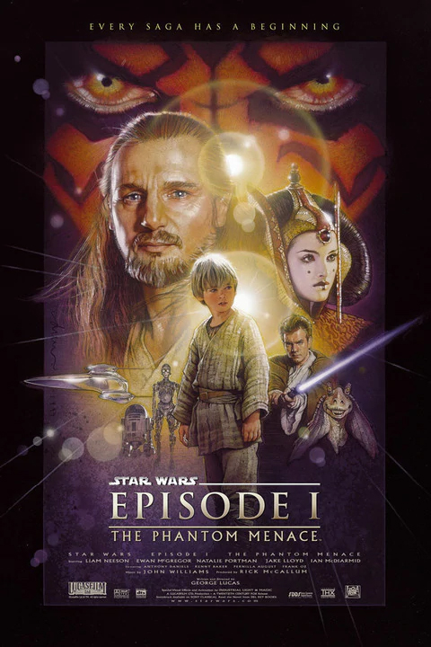
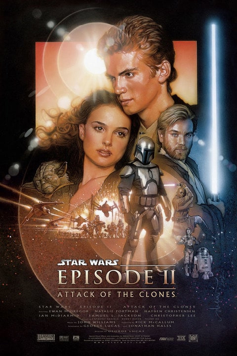
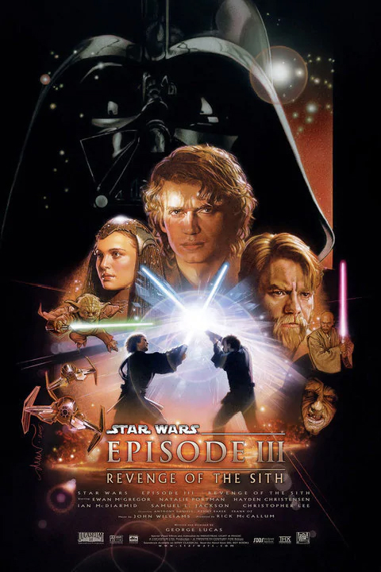
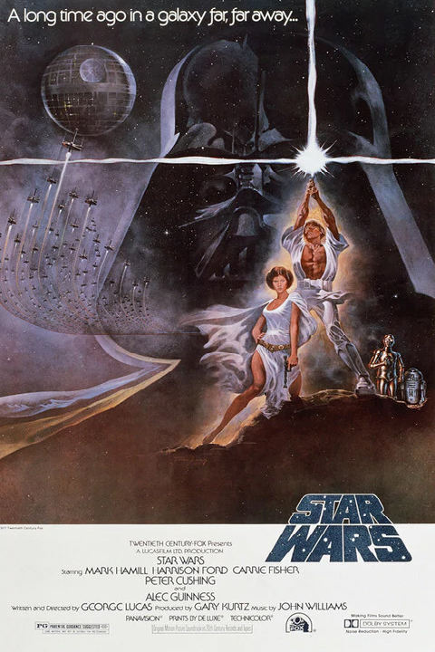
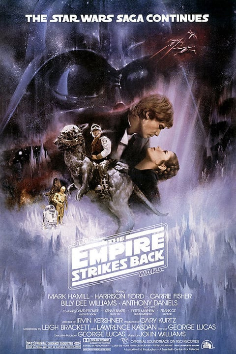
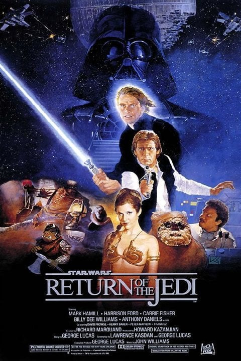

Who is George Lucas
George Lucas is an American film director, producer and special-effects pioneer with a net worth of $5.4 billion.
Famous for creating the Star Wars and Indiana Jones film franchises, Lucas also founded Lucasfilm Ltd. and Industrial Light and Magic. He sold the companies, as well as the rights to the Star Wars franchise, which includes film and television rights, to The Walt Disney Company (DIS) in 2012 for $4 billion.
After a tumultuous production process, in 1977 Lucas completed "Star Wars," which revolutionized the American film industry and became the highest-grossing film ever at the time (not adjusting for inflation). The film, which spawned its own universe of toys and other merchandise, made Lucas a fortune, as he owned all of the merchandising rights. He followed up on the movie’s enormous success with "The Empire Strikes Back" in 1980 and "Return of the Jedi" in 1983.
With the Star Wars franchise entrenched in popular culture and churning out money at the box office and in toy stores, Lucas paired with Steven Spielberg, to co-create the Indiana Jones film franchise, which included the '80s blockbusters "Raiders of the Lost Ark," "Temple of Doom" and "The Last Crusade."
In the ‘90s, Star Wars again added to Lucas’ fortune. In 1997, he re-released the original Star Wars trilogy in theaters and later on home video, with updated special effects and some unpopular alterations, including one revision to a scene that changed the moral code of a major character. Meanwhile, Lucas was hard at work writing and directing the Star Wars prequels, which consisted of three films released between 1999 and 2005. Despite a lukewarm reception from critics and outrage from many die-hard fans, the three prequels combined to earn billions of dollars at the box office.
In 2012, he sold Lucasfilm Ltd. and the rights to the Star Wars franchise to Disney for a cash payment of $2.21 billion and around 37.1 million Disney shares, putting the purchase price at $4.06 billion.
Star Wars Movies
Movies that George Lucas was producer and director
Star Wars Episode IThe Phantom Menance
After a millennia, an ancient evil returns seeking revenge. Meanwhile, Jedi Knight Qui-Gon Jinn discovers Anakin Skywalker: a young slave boy unusually strong with the Force.
 Learn MoreStar Wars Episode IIAttack of the clones
Following an assassination attempt on Senator Padmé Amidala, Jedi Knights Anakin Skywalker and Obi-Wan Kenobi investigate a mysterious plot that could change the galaxy forever.
 Learn MoreStar Wars Episode IIIrevenge of the sith
The evil Darth Sidious enacts his final plan for unlimited power -- and the heroic Jedi Anakin Skywalker must choose a side.
 Learn MoreStar Wars Episode IVA New Hope
With the planet-destroying power of the Death Star, the Empire looks to cement its grip on the galaxy. Meanwhile, farm boy Luke Skywalker rises to face his destiny.
 Learn MoreStar Wars Episode VThe Empire Strikes Back
While the Death Star has been destroyed, the battle between the Empire and the Rebel Alliance rages on...and the evil Darth Vader continues his relentless search for Luke Skywalker.
 Learn MoreStar Wars Episode VIReturn Of The Jedi
Luke Skywalker leads a mission to rescue his friend Han Solo from the clutches of Jabba the Hutt, while the Emperor seeks to destroy the Rebellion once and for all with a second dreaded Death Star.
 Learn MoreMemorable caracters
Most recognizable Star War movie caracters through out the world
LUKE SKYWALKERlegendary Jedi Master
Luke Skywalker was a Tatooine farmboy who rose from humble beginnings to become one of the greatest Jedi the galaxy has ever known. Along with his friends Princess Leia and Han Solo, Luke battled the evil Empire, discovered the truth of his parentage, and ended the tyranny of the Sith.
Learn MoreDarth Vader Dark Lord who save The Galaxy
Once a heroic Jedi Knight, Darth Vader was seduced by the dark side of the Force, became a Sith Lord, and led the Empire’s eradication of the Jedi Order. He remained in service of the Emperor -- the evil Darth Sidious -- for decades, enforcing his Master’s will and seeking to crush the fledgling Rebel Alliance. But there was still good in him…
Learn MoreOBI-WAN KENOBI legendary Jedi Master
A legendary Jedi Master, Obi-Wan Kenobi was a noble man and gifted in the ways of the Force. He trained Anakin Skywalker, served as a general in the Republic Army during the Clone Wars, and guided Luke Skywalker as a mentor.
Learn MoreYoda Grand Master of the Jedi Order
Yoda was a legendary Jedi Master and stronger than most in his connection with the Force. Small in size but wise and powerful, he trained Jedi for over 800 years, playing integral roles in the Clone Wars, the instruction of Luke Skywalker, and unlocking the path to immortality.
Learn MoreEMPEROR PALPATINEstrongest Sith - DARTH SIDIOUS
Scheming, powerful, and evil to the core, restored the Sith and destroyed the Jedi Order. Living a double life, he slowly manipulated the political system of the Galactic Republic until he was named Supreme Chancellor - and eventually Emperor - ruling the galaxy through fear and tyranny.
Learn MoreHAN SOLOCaptain of the Millenium Falcon
Han Solo rose from an impoverished childhood on the mean streets of Corellia to become one of the heroes of the Rebel Alliance. As captain of the Millennium Falcon, Han and his co-pilot Chewbacca came to believe in the cause of galactic freedom, joining Luke Skywalker and Princess Leia Organa in the fight against the Empire.
Learn MoreR2-D2 and C-3POMost famous Robots
The ever-reliable and versatile astromech droid R2-D2 continues his service to the Resistance. R2-D2 has served Padmé Amidala, Anakin Skywalker, and Luke Skywalker in turn. Has enduring friendship with the fussy protocol droid C-3PO, who longs for more peaceful times.Programmed for etiquette and protocol, Threepio was built by a young Anakin Skywalker.
Learn MoreBOBA FETTbounty hunter
With his customized Mandalorian armor and deadly weaponry, he was one of the most feared bounty hunters in the galaxy. A genetic clone of his “father,” bounty hunter Jango Fett, Boba learned combat and martial skills from a young age. Over the course of his career, which included contracts for the Empire and the criminal underworld, he became a legend.
Learn MorePrincess Leiatwin sister of Luke Skywalker
Princess Leia Organa was one of the Rebel Alliance’s greatest leaders, fearless on the battlefield and dedicated to ending the tyranny of the Empire. Daughter of Padmé Amidala and Anakin Skywalker, sister of Luke Skywalker, and with a soft spot for scoundrels, Leia ranks among the galaxy’s great heroes. Life under the New Republic not been easy for Leia.
Learn MorePersonal Quotes
while receiving the Best Movie award for Revenge of the Sith at the Peoples Choice Awards
Thank you. Thank you all. This is a very, very important award for me. Star Wars, oddly enough, doesn't really get that many awards. I'm not a big favorite with the critics, but who listens to them? I'm not a big industry favorite either, but of course they are a bunch of studio executives. The most important people for any filmmaker, the reason that I make films, is for you! The audience rules! Thank you. Thank you very much!
About star wars movies
Well, Star Wars isn't sci-fi at all - it's space opera, which is a sub-genre; I mean, it's sort of halfway between sci-fi and fantasy. The motif I used to tell these stories was the Saturday night-day serial, which is a particular genre which was very popular in the thirties and forties. I wanted it to look just like that and those were - at least, the Flash Gordon/Buck Rogers kinds of things - were space operas. Some people like to call them comic-book stories, but they aren't comic-book under the superhero genre. They're kind of looking at the early part of the century, when adventure serials first started.
In response to whether film is an art or a business
The problem is that making film is an art. Selling film is a business. The trouble is that they [studio executives] don't know how to sell films. As a result, they try to make you make films that people will go to without them having to be sold, which is the real key to the problem. And, if they weren't so backwards-- if they can't put a film in a theater and have people rush to the door, they're not interested.